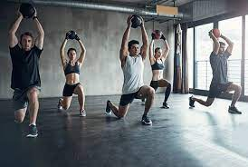
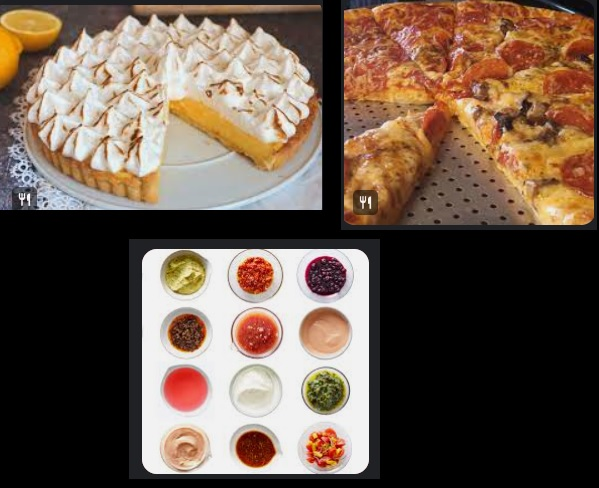

Funcional fitness training is a type of strength training that readies your body for daily activities, contains multi-joint movement patterns that involve your knees, hips, spine, elbows, wrists and shoulders.
I usually go jogging two to three times a week, for 20 to 30 minutes.
I like to prepare my meals, I like to make are cakes, pie, homemade pizza, different kinds of sauce and grilled meat the most.
